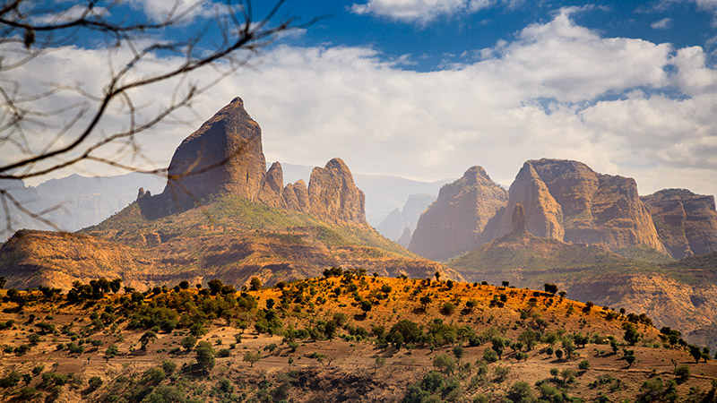
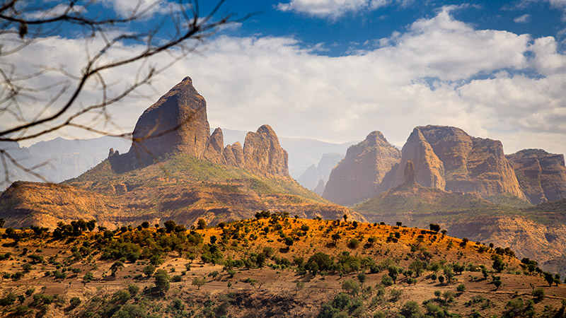
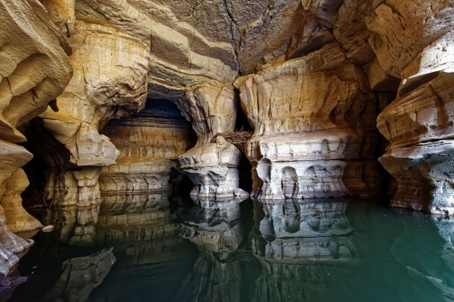
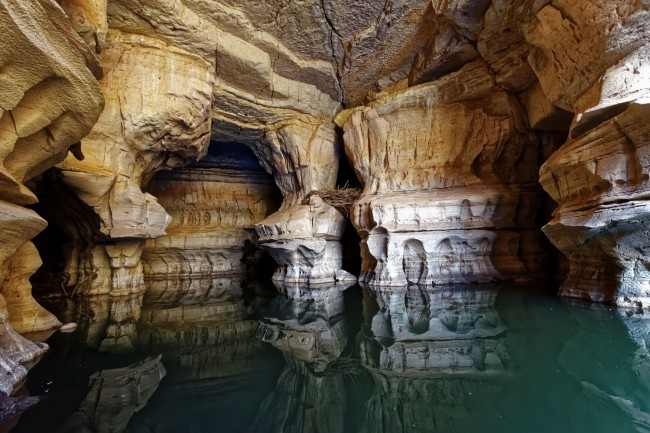

The Simien Mountains in northern Ethiopia, north east of Gondar in Amhara
region, are part of the
Ethiopian Highlands.
They are a World Heritage Site and include the Simien Mountains National Park. The mountains
consist
of plateaus
separated by valleys and rising to pinnacles. The highest Ethiopian mountain is Ras Dejen at
4,550 m
with the second
highest peak of Kidis Yared at 4,453 m; other notable peaks include Mount Biuat at 4,437 m.
The Simien Mountains are remarkable as being one of the few spots in tropical Africa where snow
regularly falls.
Because of their geological origins, the mountains are almost unique, with only South Africa's
Drakensberg range having
been formed in the same manner and thus appearing similar.


 
